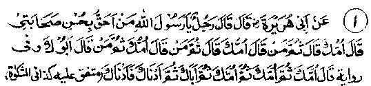
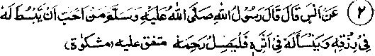

Chapter Three · Section (d): Ahadith concerning maintenance of kinship
Section (d)
AHADITH CONCERNING MAINTENANCE OF KINSHIP

1. Benefits of strengthening kinship
Hadith 1
Abu Hurairah Radhiallaho anho narrates that a man asked Rasulullah Sallallaho alaihe wasallam, "For whom should I be most concerned in maintaining good relations?" Rasulullah Sallallaho alaihe wasallam said, "Your mother". The man put the same question a second and a third time; and each time Rasulullah Sallallaho alaihe wasallam gave the same reply. When he repeated the same question the fourth time, Rasulullah Sallallaho alaihe wasallam said, "Your father and then other relatives, in order of nearness to you in kinship".
Note: Some Ulama infer from this Hadith that a mother’s share is three parts in regard to kind treatment, because Rasulullah Sallallaho alaihe wasallam said, Tour mother’ three times and said, ‘your father’ only when the question was repeated for the fourth time. The reason for this preferment the Ulama say, lies in the fact that a mother has to go through’three hardships for her child: pregnancy, child-birth and breast-feeding The theologians have added that, if a person does not have the means to take care of both his parents he should give first preference to his mother. However, the father enjoys preference in matters relating to respect and obedience from his children. (Mazahir-e-Haqq). Being a woman, a mother evidently needs more help and loving care of her children. The near relatives are then to be given preference (over others) in order of their kinship, the nearer relations will be given preference over the distant ones.
Another Hadith narrates "Begin with your mother in your good treatment, then comes your father, then your sister, then your brother and then other kinsmen in order of their nearness in relationship. Do not ignore your neighbours and the needy". (Kanz). Another Hadith quoted by Bahz Bin Hakeem from his grand father repeats the same obligation that a person has to his parents and other relations. Another Hadith indicates that Allah Ta'ala will make the hour of death easy for him who possesses the following three qualities and grant him entry into Jannah:-
1. is kind to the weak;
2. treats his parents with loving care;
3. shows favour to his subordinates. (Mishkaat)

Hadith 2
Rasulullah Sallallaho alaihe wasallam is reported to have said, "Anyone who wishes to have his means of livelihood enlarged and a prolonged life, should treat his relatives with kindness."
In this Hadith the word ‘anyone who wishes to have his footprints last longer’, implies prolonged life. For, he who lives longer will leave his footprints for a longer period; when a person dies, his footprints get effaced after a short time. Some people may take an exception to this Hadith saying, "Everybody’s term of life is predetermined". At many places in the Holy Qur’an, it has been clearly stated that the term of life is fixed; not a moment can be added or lessened therefrom.
Some Ulama have interpreted the term ‘prolongation of life’ as grant of ‘Barakah’ (blessings) in life. Due to Divine blessings a person may accomplish tasks within hours, which others usually take days to perform, and may accomplish in days what is usually done in months. Others say that ‘prolongation of life’ term implies a laudable remembrance of his good deeds long after his death. Others say that it means1 increase in progeny and his descendants’ flourishing after his death.’
It has to be admitted that, as a statement of Rasulullah Sallallaho alaihe wasallam, all of whose sayings are doubtlessly true; these benefits in some form will accrue from maintaining kinship. Allah Ta'ala is all powerful: He may create and bring about anything He wills. Whatever He wills must happen and He creates such subtle means for bringing about events that the wisest of men are taken by surprise. Therefore, there should be no ambiguity about the ‘prolongation of life’ granted as a reward for strengthening family bonds.
Truly the decrees of destiny are unalterable, but Allah Ta'ala has introduced causal relationship in the affairs of the world; for everything that happens in this world, there is a cause either hidden or apparent. For example when a person is suffering from cholera, we send for the doctors in the hope of helpful treatment to make him survive, though we know that his death-hour is fixed and cannot be delayed or hastened. There is no reason for not taking up seriously giving Sadaqah to deserving blood relations as an effective prescription for prolongation of life. This recipe was prescribed by the wisest of all men, Rasulullah Sallallaho alaihe wasallam, whose diagnosis and treatment for human ailments could never be wrong, whereas the physicians of this world may err while diagnosing a disease or writing a prescription. The subject matter of the Hadith quoted above has appeared in other narrations with slight variations, hence it is fully authentic.
It has been narrated in another Hadith, on the authority of Ali Radhiallaho anho, that for him who guarantees one thing (respect of kinship), Rasulullah Sallallaho alaihe wasallam has guaranteed four things, namely long life, respect among relatives, increase in means of livelihood and entry into Jannah. (Kanz). Rasulullah Sallallaho alaihe wasallam told Abu Bakr Radhiallaho anho that three results are assured: (1). If a victim of cruelty overlooks it, he will earn greater respect; (2)Whoever hankers after increase in his wealth, will find a decrease in it; (3) Whoever opens the door of Sadaqah and regard for kinship, will have abundant wealth. (Durre Manthur). The theologian Abul-Laith Rahmatullah alaihe has said that ten rewards are priceless in the obligations of kinship: -
1. It wins pleasure of Allah Ta'ala, who has ordered its fulfilment.
2. It promotes happiness among the kith and kin - and Rasulullah Sallallaho alaihe wasallam has said that the best of deeds is to make a Muslim happy.
3. The angels also feel happy about it
4. The Muslims praise the one who keeps it up.
5. Shaitan is grieved by it
6. It brings prolongation of life.
7. It enhances means of livelihood.
8. It brings happiness to the dead when they come to know about it
9. It strengthens mutual help: when you do good to someone, he would help you whole-heartedly in time of need.
10. One will benefit from it after his death, as the beneficiaries will always remember him with good wishes and prayers.
Anas Radhiallaho anho says that three types of persons will enjoy a place in the shade of the Grand Throne of Allah Ta'ala:-
1. The benefactor of the kith and kin, who gets a prolonged life and enhanced livelihood and also an enlarged grave.
2. A widow who brings up young children of her deceased husband, without her remarriage, so that she has no difficulties in looking after them till they are grown up.
3. The person who invites the poor and orphans to participate in his feasts.
Hasan Radhiallaho anho has quoted Rasulullah Sallallaho alaihe wasallam to have said that Allah Ta'ala loves two foot-steps, the one taken for the sake of obligatory Salaat and the other taken to meet an intimate friend or a relation. Some Ulama have said that five things, if observed regularly and constantly, earn such rewards from Allah Ta'ala as are even bigger than high mountains, and one’s means of livelihood are also increased on account of them. These are: Constancy in giving Sadaqah, be it large or small; spending regularly on one’s relatives (to strengthen family bonds), whether one spends little or much; Jehaad (striving in the path of Allah); remaining always in a state of Wudhu (ablution); constancy in obedience to one’s parents. (Tanbeeh-ul-Ghafileen). A hadith says, "Strengthening ties of kinship is a virtue for which one is most readily rewarded and blessed by Allah; even many a sinner is granted abundance in wealth and in children, on account of kind behaviour towards relatives'. (Ihya). It occurs in a Hadith that the following virtues cause one’s misfortune to change into good fortune, prolong one’s term of life and avert an evil death: giving away Sadaqah in the proper manner, adopting ways that are good and beneficial (for others), treating one’s parents with kindness, and maintaining bonds of kinship.
There are several other Ahadith which assert that a man’s livelihood is increased and his term of life is prolonged on account of his kindness towards his kinsmen. We have just quoted a few of them, by way of example. Rasulullah Sallallaho alaihe wasallam has pointed out to us an easy way of achieving these two ambitions through strengthening ties of kinship. All those who desire a long life and extensive means of livelihood can try this prescription suggested by Rasulullah Sallallaho alaihe wasallam, if they sincerely believe in the truth of his sayings, and spend as much as they can on strengthening kinship. For, it is bound to be recompensed with increase in means of livelihood and, furthermore, it guarantees a prolonged term of life.